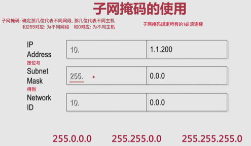

网络模型
Sun 07 May 2017 by Little CaptainOSI七层模型
1. 应用层
- 数据单位: APDU
- 作用: 针对用户(应用程序)
2. 表示层
- 数据单位: PPDU
- 作用: 数据的编码、加密和解压缩等
3. 会话层
- 数据单位: SPDU
- 作用: 确定数据是否向下传递
4. 传输层
- 数据单位: TPDU
- 作用: 确定数据是否可靠; 确定网络端口是否可靠; 查错、校验; 流量控制等等
5. 网络层
- 数据单位: 报文, 报文中有 IP 地址
- 作用: 确定IP地址编码
6. 数据链路层
- 数据单位: 帧, 帧中最重要的数据就是MAC地址
- 作用: MAC地址编码
7. 物理层
- 数据单位: 比特
- 作用: 实际的数据传递
说明
- 上3层给用户提供服务, 所有软件都会用(包括PPT这类不用联网就能用的软件)
- 下4层为传送数据提供服务, 只有需要网络传输的软件才会用
TCP/IP 四层模型
1. 应用层
- 对应七层模型: 应用层; 表示层; 会话层
- 作用: 为用户提供各种具体服务(FTP, Telnet, DNS, SMTP)
2. 传输层
- 对应七层模型: 传输层
- 作用:
- 为应用层实体提供端到端的通信功能
- 保证数据包的顺序传送及数据的完整性; 确定发送和接收端口号
- 查错、校验、流量控制
- 最重要的就是确定TCP包头和UDP包头
-
主要协议:
-
传输控制协议TCP
- 3 次握手

- 可靠的面向连接的协议
- 类似: 打电话
- 传输数据过程中始终有交流, 有错误就要求对方重发
- 应用: 网页, 邮件...
- 优点: 数据安全可靠
- 缺点: 慢
-
用户数据报协议UDP
- 不可靠的面向无连接的协议
- 类似: 发短信
- 不管对方能否接受直接发送
- 应用: QQ
- 优点: 快
- 缺点: 数据可能丢失
-
-
传输层头内容: 主要是
端口
3. 网际互连层
- 对应七层模型: 网络层
-
作用:
- 解决主机到主机的通信问题
- 其协议设计数据包在整个网络上的逻辑传输
-
主要协议
- 网际协议IP: 源IP,目的IP; 确定数据在公网上如何发送
- 互联网组管理协议IGMP
- 互联网控制报文协议ICMP: ping命令利用了这个协议
-
网际层头: 主要是
IP
4. 网络接口层
- 对应七层模型: 数据链路层; 物理层
-
作用:
- 负责监视数据在主机和网络之间交换
- 地址解析协议(ARP)工作在此层(七层中的数据链路层)
- arp指令: 将IP翻译成对应的MAC地址; 翻译的目的(外网通信用IP, 局域网通信用MAC, 交换机值识别MAC地址)
-
网络层头: 主要是
MAC, 又名以太帧头
七层模型与四层模型的比较
共同点
- 都采用了层次结构的概念
- 分层设计
- 都能够提供面向连接和无连接两种通信服务机制
不同点
- 一个七层一个四层
- 对可靠性要求不同
- 七层模型具有通用性: 在协议开发前设计的
- 四层模型是先有协议集后在建立模型: 不适用于非 TCP/IP 网络
- 实际市场应用不同: 七层只是理论模型, 无成熟产品; TCP/IP已成为实际上的国际标准
网络基本概念
Sun 07 May 2017
by Little Captain
物理地址
- 又名: MAC地址, 网卡硬件地址
- 作用: 用于局域网内的通信
- 48位
IP地址
- IP 协议: Internet Protocol
- IP 协议版本: IPv4(不定长包头、解析耗时); IPv6(定长包头)
- 32位: 8位一组共4组(X1.X2.X3.X4, 0.0.0.0->255.255.255.255)
- 分类
- 用 IP 的第一位对网络进行分类
- 每个网段的主机数用子网掩码确定
- 每个网络的第一个地址代表网络本身
- 每个网络的最后一个地址代表网络的广播地址(广播地址是专门用于同时向网络中所有工作站进行发送的一个地址)

- 子网掩码


端口
- 属于传输层: 在传输层包头中(TCP头, UDP头)
-
端口号
- IP全球唯一类似于门牌号: 确定服务器位置 …